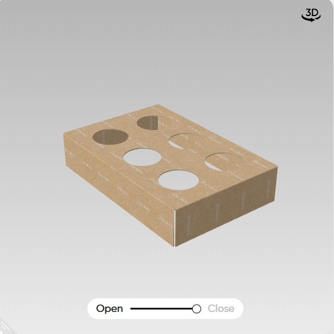
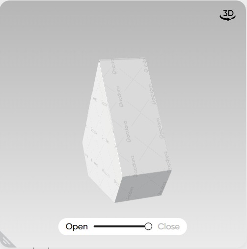

The Deep Space Challenge: Space-Trash
During a three-year mission to Mars and back, an eight-person crew would accumulate about 12,600 kg of inorganic waste — packaging, textiles, and structural components.
Transporting new resources from Earth or sending waste back is expensive and inefficient. This creates an urgent need for sustainable in-situ recycling systems capable of repurposing the materials available on Mars.
The Core Problem
Design systems to manage, reuse, or recycle inorganic waste ("trash") on the Martian surface, transforming waste into useful materials and reducing payload mass.
Aluminum Art: The Approach
- Mars missions generate tons of inorganic waste, with aluminum as one of the most reusable materials
- Current methods don't allow practical reuse of aluminum waste for tools or art
- Our idea: an origami-based recycling system that transforms thin aluminum trays into functional tools and artistic pieces
Why Aluminum?
- Lightweight, strong, and flexible — ideal for space applications
- Abundant in mission packaging materials
- Requires zero extra energy — no emissions, fully sustainable
Read Full Challenge Details
How to Make M-Art
Long-duration missions to Mars generate tons of inorganic waste and long periods of isolation. How to Make M-Art is a practical origami-based manual that empowers astronauts to transform discarded aluminium trays and packaging into useful tools, storage, decorations, and even collaborative sculptures.
By combining engineering, psychology, and design, the guide supports mission sustainability and the crew's mental well-being through hands-on aluminum recycling projects.
The Three Pillars of M-Art:
1. Basic Functional Folds
- Start-up projects that teach astronauts to fold aluminium waste into simple but practical shapes: storage boxes (AluBox), hooks (AluHook), and basic pockets
- Requires only hands and basic folding — no tools, no extra energy
- Builds confidence and essential skills for later complex designs
2. Advanced M-Art Creations
- DIY projects for more functional applications such as Miura-fold reflectors, modular panels, and foldable furniture
- Enhances self-sufficiency and problem-solving during missions
- Turns structural waste into mission-ready tools
3. Art on Mars: Aluminium Origami
- Encourages creativity and stress relief through sculptures like the AluDragon and other modular art pieces
- Promotes teamwork and morale by turning free time into meaningful shared projects
- Develops a unique Martian artistic culture using available materials
Environmental Benefits
- Up to 90% of aluminium packaging reused through origami techniques
- Promotes circular material economy in space environments
- Reduces waste storage needs and resupply mass requirements
Psychological Benefits
- Provides structured hands-on activities to reduce stress and monotony
- Strengthens social bonds and teamwork through collaborative folding sessions
- Offers sense of accomplishment and cultural identity in distant environments
Operational & Economic Benefits
- Decreases reliance on Earth for basic tools and supplies
- Optimizes mission payload mass by repurposing materials already on site
- Supports self-sustaining Martian creative culture and resource management
By merging these elements, the project transforms spare time into meaningful activities, supporting astronauts' psychological resilience and mission sustainability.
How to make M-Art: Aluminium special edition
Welcome to the official M-Art construction guide - your essential companion for transforming aluminum waste into functional tools and therapeutic art pieces through origami-based techniques adapted for space environments.
Manual Navigation Index
Click to jump to any section:
🔰 BASIC FOLDS
Level Focus: Basic level focuses on quick, low-energy folds that use minimal tools and provide immediate utility. Perfect for astronauts with limited free time and no prior origami experience.
ğŸ› ï¸ General Tools Needed:
- Clean aluminium food trays – recycled from mission supplies
- Scissors – for cutting strips (permitted as basic mission equipment)
- Permanent marker – for marking folding lines (optional but helpful)
- Clean gloves – recommended for safety while cutting
- Ruler – optional for precise folds
- Flat, stable folding surface
💡 Pre-Marked Trays (Recommended Innovation):
To save time and make folding intuitive in space, aluminium trays can be pre-scored or pre-printed with fold lines and corner marks. Each tray shows the pattern for its corresponding model (e.g., AluBox Long, Hex Tray), making it easy to fold even while wearing gloves in microgravity.
♻️ Material Allocation:
Standard aluminium tray size ~32×26×6 cm:
- 1 tray can create 1 long box or 1 hex tray.
- Leftover strips often yield 3–4 AluHooks or dividers.
📦 AluBox Variants – Basic Models
Below are six practical designs for storage and organization. Each includes a folding pattern and a preview of the final result.
1️⃣ AluBox – Long Box with Slot


Use: Long container with a side slot for sliding in tools or holding elongated items.
Material: 1 full aluminium tray.
Special: Side opening improves accessibility for frequent-use tools.
2️⃣ AluBox – Hexagonal Tray

Use: Shallow hexagonal tray for holding nuts, bolts, or food portions.
Height: ~2 cm walls.
Material: 1 tray cut into hexagonal base.
3️⃣ AluBox – Deep Hexagonal Tray
Use: Deep hex tray (~5–6 cm walls) for bulkier items or liquid-safe containers.
Material: 1 full deep aluminium tray.
Note: Reinforce corners with leftover strips for added strength.
4️⃣ AluBox – Mini Shelves

Use: Small standing shelves for organizing samples or instruments.
Material: 2 trays + extra strips as shelf supports.
Feature: Lightweight and modular stacking possible.
5️⃣ AluBox – Divider Box (6 Compartments, 4 Circular)
Use: Compartmentalized storage box with six sections, four fitted with circular cutouts for test tubes or small bottles.
Material: 1 tray for base + leftover strips for internal dividers.
Benefit: Ideal for lab samples and organized transport.
6️⃣ AluLid – Cover with 6 Circular Openings

Use: Cover designed to fit standard AluBoxes or Divider Box; has six circular openings to hold vials or secure cylindrical containers.
Material: 1 tray cut and folded to match lid dimensions.
Advantage: Protects contents while allowing vertical storage of samples.
AluHook – Hanging System
Purpose: Create sturdy hooks for hanging tools, clothing, or equipment in zero-gravity environments.
📋 Step-by-Step Instructions:
- Cut Strips: Use leftover tray edges to cut strips approximately 15 cm × 3 cm.
- Bend & Shape: Simply bend the strips into desired hook shapes (C, S, or J) depending on use.
- Flatten Mount: Slightly flatten one end to act as the mounting base.
- Test Strength: Hooks should support ~200 g safely; adjust folds for sturdier grip.
🔧 Tools Required: Scissors, hands | â±ï¸ Time: 1–2 minutes | 🯠Difficulty: Beginner
🆠Benefits: Quick to make, reuses leftover edges, highly customizable.
⚙️ ENGINEERING FOLDS
Focus: These folds create larger modular components for mission-scale applications such as reflectors, privacy panels, or larger structures. Each model includes both the folding pattern and the expected final form.
☀️ Miura Fold Reflector
Purpose: Create deployable reflective panels for thermal management, solar applications, or emergency signaling.
📋 Step-by-Step Instructions:
- Mark Grid: On a large aluminium sheet (~30 × 20 cm), draw a diamond grid pattern with 4 cm spacing.
- Mountain Folds: Fold along diagonal lines in one direction as mountain folds.
- Valley Folds: Fold along opposite diagonal lines as valley folds.
- Accordion Fold: Gently compress to create the Miura-ori accordion pattern.
- Deploy: Pull opposite corners to expand the panel into a flat reflector.
- Lock: Secure with small tabs if necessary during use.
🔧 Tools Required: Ruler, marker, patience | â±ï¸ Time: 15–20 minutes | 🯠Difficulty: Intermediate
🆠Benefits: Compact storage, rapid deployment, reusable in different scenarios.
🔷 Modular Octahedron Unit
Purpose: Interlocking octahedron modules designed to serve as part of larger reflector assemblies or geometric frameworks.
📋 Step-by-Step Instructions:
- Pattern: Cut a diamond-based pattern with pre-marked fold lines for triangular faces.
- Pre-Fold Edges: Fold along all lines to shape triangular panels.
- Assemble Shape: Bring triangular panels together to form an octahedron (8 triangular faces).
- Secure Tabs: Tuck or press-fit connecting tabs to lock faces in place.
- Connect: Multiple units can be joined edge-to-edge to form reflector domes or structural spheres.
🔧 Tools Required: Scissors, ruler | â±ï¸ Time: 12–15 minutes per unit | 🯠Difficulty: Intermediate
🆠Benefits: Lightweight, strong geometric module for scalable construction.
Modular Pentagonal Prism Unit
Purpose: Pentagonal prism module used for creating elongated modular structures or supporting frameworks for larger reflector surfaces.
📋 Step-by-Step Instructions:
- Pattern: Cut a flat template with five rectangular faces and two pentagonal ends.
- Pre-Fold Faces: Fold along all vertical edges to shape the five sides.
- Close Ends: Fold the pentagonal flaps inward to seal the ends.
- Reinforce: Add small folds along internal edges for extra rigidity.
- Connect Modules: Align and bind multiple prisms for larger constructs or reflector frames.
🔧 Tools Required: Scissors, ruler | â±ï¸ Time: 15 minutes per prism | 🯠Difficulty: Intermediate
🆠Benefits: Provides strong, stackable modules for engineering-level builds.


🨠ADVANCED FOLDS
Overview: Advanced folds highlight modular origami projects that require patience and teamwork. These creations use hundreds of small interlocking pieces, commonly called “Chinese Modular Origami”, to build decorative or large-scale sculptures that promote creativity and stress relief.
🔺 Chinese Modular Triangle Unit
Purpose: This thick triangular unit is the universal building block for advanced sculptures. By assembling many of these, astronauts can create large and complex 3D structures — from vases to dragons.
📋 Folding Instructions:
All steps for folding the triangular unit are shown in the single diagram below:
🔧 Tools Required: Only hands (optional ruler for neat edges) | â±ï¸ Time: ~1 minute per module | 🯠Difficulty: Moderate
🆠Benefits: Sturdy, compact, easy to replicate — ideal for stress-relieving group activities and creative projects.
🉠Example Modular Sculptures
Purpose: Demonstrate what can be created by assembling hundreds of the triangular modules. These examples inspire teamwork and show the versatility of modular origami in space habitats.
✨ Example Designs:
Below are two popular dragon designs entirely made from the Chinese modular units:
🔆 Tip: Astronauts can use different sizes or colored aluminium pieces (if available) to create patterns, scales, or unique designs.
👥 Collaborative Art Projects
Purpose: Large-scale art installations that require crew cooperation and provide ongoing mental health benefits.
🆠Project Ideas:
- Martian Garden: Create aluminum flowers and plants for habitat decoration
- Solar System Mobile: Hanging sculpture representing planets and moons
- Mission Timeline: Visual representation of mission milestones and achievements
- Cultural Celebration Pieces: Holiday decorations and cultural art from crew backgrounds
🔧 Tools Required: Varies by project | â±ï¸ Time: Ongoing projects | 🯠Difficulty: Variable
🆠Benefits: Long-term engagement, cultural expression, habitat personalization, team building
Safety Protocols & Guidelines
Pre-Folding Safety Checklist:
- Material Inspection: Check aluminum for sharp edges, contamination, or structural damage
- Clean Workspace: Ensure work area is free of debris and properly lit
- Hand Protection: Wear appropriate gloves when handling sharp or rough aluminum pieces
- Tool Safety: Keep cutting tools secure and away from floating objects in microgravity
Martian Environmental Considerations:
- Reduced Gravity: Account for different material behavior - folds may be looser or tighter
- Dust Mitigation: Work in enclosed areas to prevent Martian dust contamination
- Temperature Variations: Aluminum becomes more brittle in cold - warm materials before folding
- Radiation Shielding: Use folded pieces as additional protective barriers when possible
🔧 Troubleshooting Common Issues
⌠Problem: Fold Won't Hold
Solutions:
- Increase crease pressure - use fingernail or tool edge
- Create locking tabs or interlocking design
- Use slightly thicker aluminum if available
⌠Problem: Material Tears During Folding
Solutions:
- Warm material slightly before folding
- Make gentler, gradual folds instead of sharp creases
- Check for stress concentrations and redistribute forces
⌠Problem: Project Doesn't Match Instructions
Solutions:
- Verify starting material dimensions
- Review fold sequence - some steps may be order-dependent
- Adapt design to available materials - flexibility is key
⚙️ Maintenance & Care
Cleaning Folded Items:
- Regular Cleaning: Wipe with damp cloth to remove dust and debris
- Deep Cleaning: Unfold if necessary, clean flat, then re-fold
- Sanitization: Use approved space-safe cleaning agents
Repair & Refurbishment:
- Small Tears: Reinforce with additional aluminum strips
- Worn Creases: Re-fold along original lines to restore strength
- Complete Rebuild: Unfold completely and start fresh when beyond repair
Lifecycle Management:
- Reuse: Items can be unfolded and refolded for different purposes
- Upcycle: Combine worn pieces into new, larger projects
- Documentation: Track successful designs for mission reports
🌟 Advanced Techniques & Tips
💡 Basic Folding Mastery:
- Crease Quality: Use consistent pressure for uniform folds
- Material Grain: Fold with the aluminum grain when possible for stronger holds
- Measurement: Use body parts (finger width, hand span) as measuring tools
- Planning: Always visualize the final product before starting
⚡ Engineering Enhancement:
- Stress Distribution: Create curved folds instead of sharp angles for durability
- Interlocking Systems: Design connections that become stronger under load
- Modular Thinking: Build components that can serve multiple functions
- Load Testing: Always test weight limits before trusting critical applications
Creative Innovation:
- Hybrid Materials: Combine aluminum with fabric or plastic elements when available
- Surface Texturing: Create patterns and textures for both function and aesthetics
- Color Coding: Use different aluminum sources to create visual organization systems
- Documentation: Photograph successful designs for sharing with future missions
Mission Impact & Future Applications
Immediate Benefits:
- Waste Reduction: Up to 90% of aluminum packaging repurposed
- Psychological Support: Structured creative activities combat isolation stress
- Team Building: Collaborative projects strengthen crew bonds
- Resource Independence: Reduced reliance on Earth-supplied tools
Research Applications:
- Materials Science: Study aluminum behavior in Martian conditions
- Psychology Research: Document therapeutic effects of structured creativity
- Engineering Innovation: Develop new space-specific folding techniques
- Cultural Studies: Create unique Martian artistic traditions
Earth Applications:
- Educational Programs: Inspire circular design thinking in schools
- Disaster Relief: Rapid shelter and tool creation from available materials
- Sustainability Training: Demonstrate zero-waste engineering principles
- Therapeutic Programs: Structured creativity for stress management
Tools & Resources
Explore these interactive tools to learn and test your aluminium origami folds before your Mars mission:
These simulators allow you to practice folding techniques virtually, perfect for mission preparation and training scenarios.
Research & Development Tools:
- Visual Design: Canva for manual and presentation creation
- Collaboration: Google Docs for team coordination and drafting
- Research Foundation: Psychological and ergonomic studies on isolation and creativity
- Quality Assurance: AI assistance for clarifications and proofreading (all creative decisions human-made)
â Why the Manual Matters
This guide is more than a set of folds — it equips astronauts to:
- Turn aluminium waste into practical tools and artistic expressions
- Maintain psychological balance during long isolation periods
- Foster innovation, teamwork, and sustainability at the Martian outpost
- Create meaningful activities that connect Earth traditions with Mars innovation
🎮 Try Origami Simulator